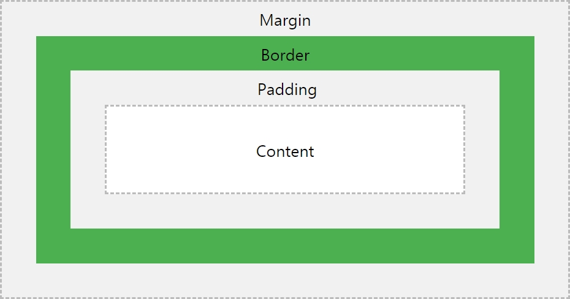

CSS
Cascading Style Sheets (CSS) is a style sheet language used for describing the presentation of a document written in a markup language like HTML. CSS is a cornerstone technology of the World Wide Web, alongside HTML and JavaScript.

CSS rule-set
A CSS rule-set consists of a selector and a declaration block:

The selector points to the HTML element you want to style.
The declaration block contains one or more declarations separated by ; semicolons.
Each declaration includes a CSS property name and a value, separatied by a : colon.
Multiple CSS declarations are separated with semicolons, and declaration blocks are surrounded by {curly braces}.
Inserting CSS to HTML
There are three ways of inserting a style sheet:
- External CSS
- Internal CSS
- Inline CSS
- External CSS
- Internal CSS
- Inline CSS
With an external style sheet, you can change the look of an entire website by changing just one file. Each HTML page must include a reference to the external style sheet file inside the ＜link＞ element, inside the head section.
ex)＜link rel="stylesheet" href="style.css"＞
An internal style sheet may be used if one single HTML page has a unique style. The internal style is defined inside the ＜style＞ element, inside the head section.
ex) ＜style＞
h1 {color: blue; margin: 10px;}
＜/style＞
An inline syle may be used to apply a unique style for a single element. To use inline styles, add the style attribute to the relevant element. The style attribute can contain any CSS property.
ex) ＜h1 style="color: blue; text-align: center;＞ This is h1.＜/h1＞
CSS Comments
Comments are used to explain the code, and may help when you deit the source code at a later date. These comments are ignored by browsers.
A CSS commnt is placed inside the ＜style＞element, and starts with /* and ends with */.
You can add comments to your HTML source by using the ＜!--comment--＞.
CSS Colors
Colors are specified using predefined color names, or RGB, HEX, HSL, RGBA, HSLA values. In CSS, a color can be specified by using a color name. Also you can set the background/text color for HTML elements:
CSS Borders, Margins, Paddings
The CSS border properties allow you to specify the style, width, and color of an element's border.
These are the properties of the style of a border.
This is a dotted border.
This is a dashed border.
This is a solid border.
This is a double border.
This is a groove border.
This is a ridge border.
This is a inset border.
This is a outset border.
This is a mixed border.
The CSS margin properties are used to create space around elements, outside of any defined borders. With CSS, you have full control over the margins. There are properties for setting the margin for each side of an element(top,bottom,right,left).
The CSS padding properties are used to generate space around an element's content, inside of any defined borders. With CSS, you have full control over the padding. There are properties for setting the padding for each side of an element (top, right, bottom, and left).
CSS Box model
All HTML elements can be considered as boxes. In CSS, the term "box model" is used when talking about design and layout.
The CSS box model is essentially a box that wraps around every HTML element. It consists of: margins, borders, padding, and the actual content.

CSS Media Queries